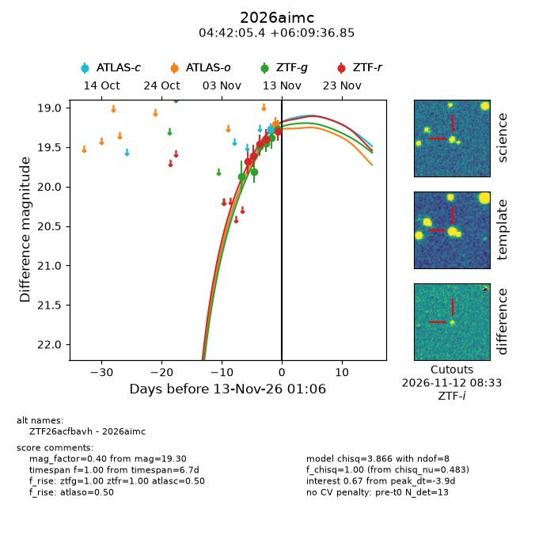
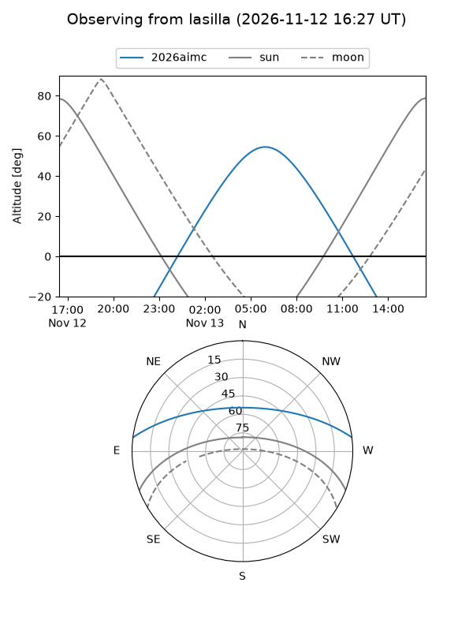
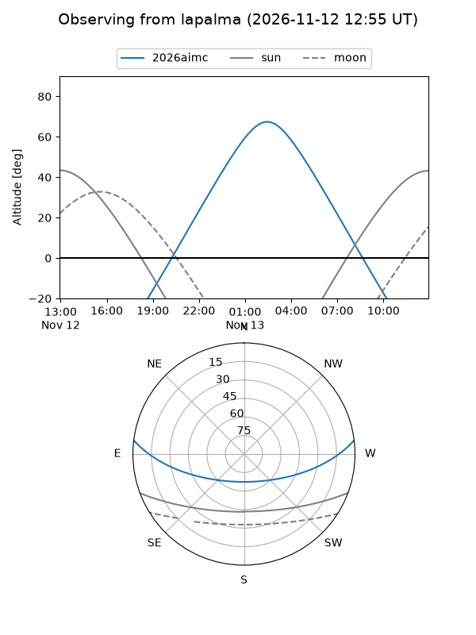
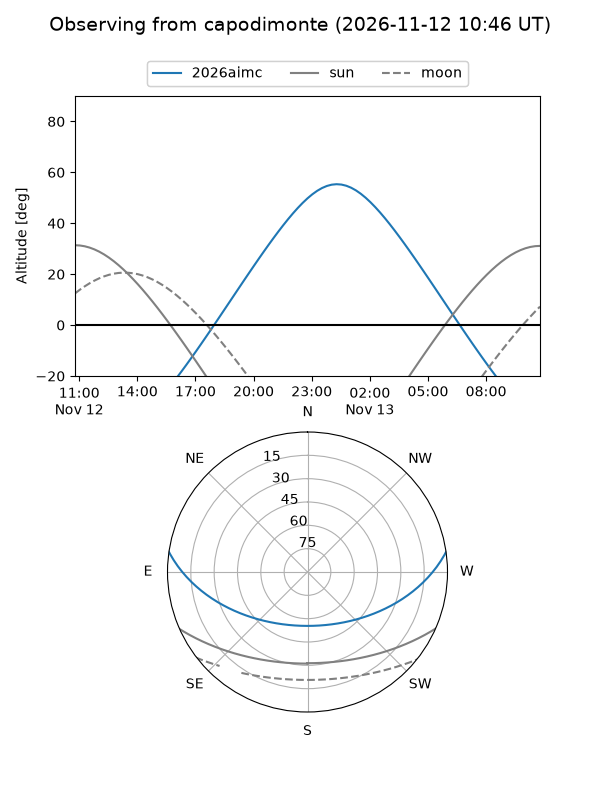
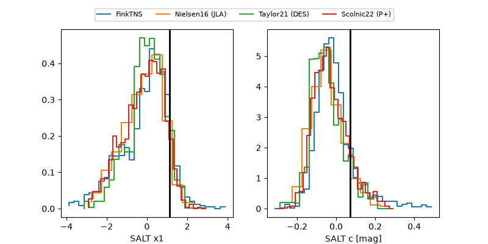

2026aimc
Target 2026aimc at 2026-11-13 01:07
Aliases and brokers:
FINK-ZTF: ztf.fink-portal.org/ZTF26acfbavh
Lasair-ZTF: lasair-ztf.lsst.ac.uk/objects/ZTF26acfbavh
ALeRCE-ZTF: alerce.online/object/ZTF26acfbavh
YSE-PZ: ziggy.ucolick.org/yse/transient_detail/2026aimc
TNS name: wis-tns.org/object/2026aimc
Direct TNS query: direct search
alt names
ZTF26acfbavh (ztf,fink_ztf)
2026aimc (tns,yse)
Coordinates:
equatorial (ra, dec) = 70.5225,+6.16024
equatorial (HMS+DMS) = 04:42:05.39,+06:09:36.85
galactic (l, b) = (191.0139,-25.11098)
Flags:
peak dt: -3.9
Photometry:
last atlasc=19.27, atlaso=19.21, ztfg=19.27, ztfr=19.30
1 atlasc, 1 atlaso, 6 ztfg, 5 ztfr detections
Lightcurve

Visibility



Additional plots
